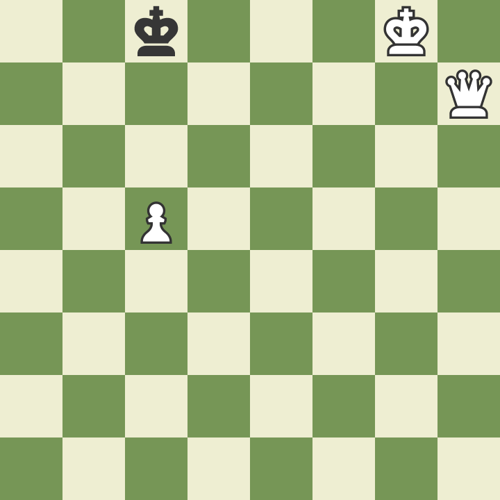

"When I was preparing for one term’s work in the Botvinnik school I had to spend a lot of time on king and pawn endings. So when I came to a tricky position in my own games I knew the winning method." - Garry Kasparov
In this video, you will learn a basic chess checkmate: King and Queen vs King. You can just use the timestamps to navigate. (If you cannot see them, view the video on YouTube and see the description. It includes timestamps).
Here are some chess endgame scenarios where you need to determine whether this position is a draw or a win for either side. These will also help with your chess visualisation and algebraic notation skills, as the solutions are written in algebraic notation.
In the first scenario, the black pawn is one square away from promotion, but it is white to move. Is this a draw? If not, who will win?
SOLUTION: After Rc8, Rc7, or Rc6, it is lost for black. This is because if the black king tries to protect the pawn on b2 by playing Ka3, white will play Ra8+, Ra7+, or Ra6+, depending on their last move. After this, the black king will need to move and the black pawn will be captured. If white plays Rc6 and black plays Kb5, attacking the rook, the rook should move to c8 or c3. If white moves the rook to c8, there is always Kxb2. This will always be possible because the black king can never protect the pawn because of his last move. If white plays Rc3 instead of Rc8, white will simply pick up the black pawn and win the game. White cannot play Rc3 immediately, because after b1=Q+, it is a draw. If the new queen is captured, the rook will be captured.
In the second scenario (where both kings have moved to the other side of the board), the black pawn is two squares away from promotion, and it is black to move. Can black somehow force a draw?
SOLUTION: In the position, black can force a draw by pushing their pawn to h2. This leaves black with no more legal moves, so if the rook stays in the G-file, it will be stalemate (which is a draw). If the rook moves to any other file, say the E-file, the black king will simply move out of the way, and the pawn will promote, also leading to a draw. Their only other legal move, Kh2, also leads to a draw, since the white king is not active at all.

White is clearly winning in the final position, but how many moves are there until mate? White to move and win.
SOLUTION: In this final scenario, we see that white cannot immediately checkmate the black king, but there is a way to checkmate the black king in two moves. White will do this by playing c6. After this, the black king will move to either d8 or b8. After Kd8, there is Qd7#. If Kb8 is played, there is Qb7#.